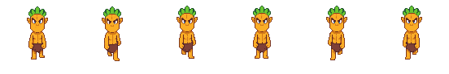
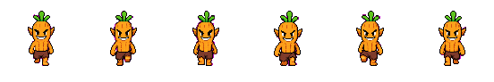

남향 걷기 6프레임 비교. 두 스프라이트 모두 92x92 캔버스와 140ms 재생 간격으로 맞췄다.
PixelLab current

GPT Image experiment

초기 판단:
PixelLab은 프레임 정합성, 앵커, 다방향 확장성이 안정적이다.
GPT Image는 캐릭터성, 표정, 포즈 임팩트가 더 좋지만 프레임별 크기와 마젠타 잔여 픽셀 보정이 필요하다.
단일 아이콘/초상화는 GPT Image가 강하고, 게임 내 다방향 반복 애니메이션은 아직 PixelLab이 더 안전하다.